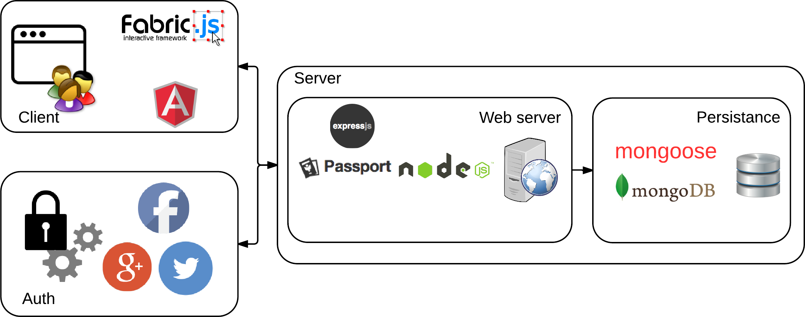
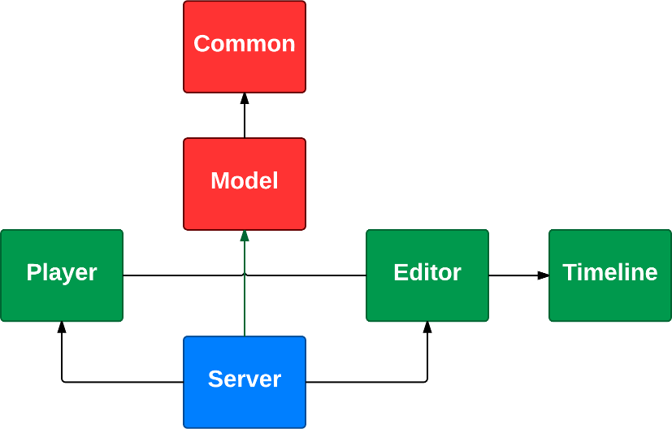

Animates
Sitio web para la creación
colaborativa de animaciones
Alumnos
Nicolás Bello Camilletti
(86676)
Motivación
- Oportunidad para utilizar tecnologías innovadoras
- Resolver un problema diferente
- Simular un emprendimiento
- Limitación de herramientas existentes
Componentes

Componentes del diseño

Flujo de operaciones de desarrollos

Cliente
Servidor
- node.js
- express
- Socket.IO
- Passport
- mongoose
- jade
Dev Ops
- JavaScript
- Grunt
- Jenkins
- Mocha
- JSHint
- git
- browserify
- Yeoman
- Bower
- npm
Base de datos
Demo
Estadísticas
En números
- Primer commit: 24 de Agosto de 2013
- # de commits: 985
- # de Trabajos de Jenkins: 346
- # de deploys: 291
- Tiempo promedio por trabajo: 35 min
- Tiempo promedio de deploy: 1 min
- # de tests: 435
Evolución de commits
Patrón de commits
Tiempos de desarrollo
- Agregar un cuadrado: 6 meses
- Hacer que se mueva: 2 meses
- Agregar nuevas figuras: menos de 1 hora
- Poder decir esto: no tiene precio
Problemas encontrados
- Tecnologías
- Desconocidas por nosotros
- En desarrollo
- Gran diversidad
- Integración
- JavaScript
- Falta de IDE y herramientas de desarrollo
- Deployment
Tecnologías
- node.js
- AngularJS
- Dev Ops
- Canvas y Fabric.js
- mongoDB y mongoose
Diseño
- Separación de componentes
- Falencias en la abstracción con Fabric.js
- Modulización
- Capa de abstracción
Metodologías
- Desarrollo iterativo e incremental
- Iteraciones en función de hitos, no de tiempos
Posibles Mejoras
- Creación del video
- Creación de la imagen preview
- Soporte para sonido
- Soporte cross browser
- Zoom en el canvas
- Soporte de escenas
- Visualización de los otros usuarios
- Mejorar usabilidad
- Integración con redes sociales